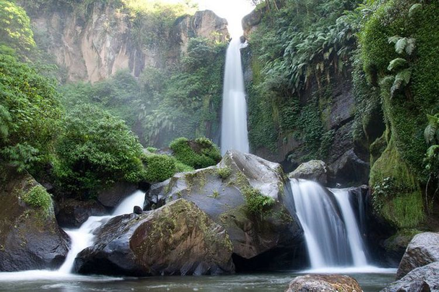

| Beranda | Menu Wisata | Website Resmi |
| Beranda | Menu Wisata | Website Resmi |
Selamat datang di Indonesia, jelajahi dengan leluasa dan nikmati perjalanan yang nyaman dan berkesan.
Berikut adalah objek wisata menarik di Jawa Timur.
 Gunung Bromo Gunung Bromo merupakan salah satu tempat wisata terkenal yang berada di Jawa Timur. |
Kawah Ijen Kawah Ijen merupakan salah satu tempat wisata terkenal yang berada di Jawa Timur. |
 Coban Rondo Coban Rondo merupakan salah satu tempat wisata terkenal yang berada di Jawa Timur. |
Kunjungi website resmi pariwisata Indonesia:
Indonesia Travelcontact : Jelajah Wisata +62584672 yansymulyantiprihartini@gmail.com